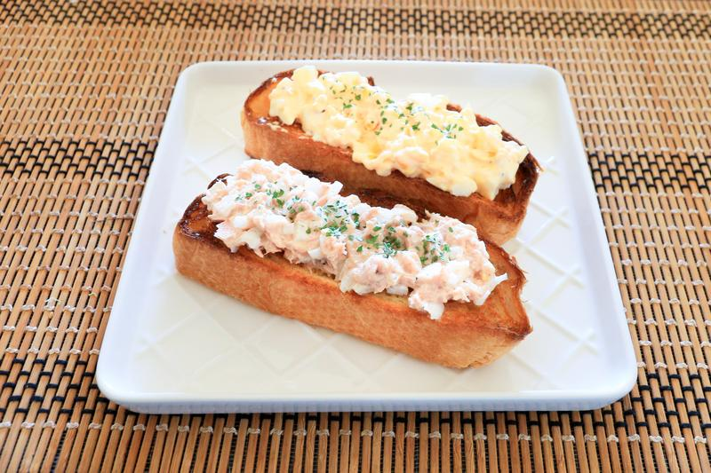

1位 ビスケット
外はサクッと香ばしく、中はふんわり軽やかな食感に焼き上げた自家製ビスケット。温かいうちに割って、艶やかな特製メープルシロップをたっぷり絡めてお召し上がりください。ティータイムのお供や、ちょっとした小腹満たしにぴったりの一品です。

2位 エッグパン・ツナパン
香ばしくトーストした厚切りバゲットに、2種類の人気フィリングを贅沢にのせたオープンサンド。濃厚でまろやかな「たまごサラダ」と、旨みたっぷりの「ツナマヨ」を一度に味わえる満足感抜群のプレートです。ランチやブランチにおすすめです。

3位 クロワッサン
幾重にも重なった繊細な層と、黄金色の焼き目が美しい自慢のクロワッサン。ひと口頬張れば、サクサクと心地よい音とともに豊かなバターの香りが口いっぱいに広がります。朝のコーヒーと合わせて、至福のひとときをお楽しみください。

4位 ホットサンド
こんがり美しい焼き目をつけたサクサクのトーストに、みずみずしいトマトとシャキシャキのレタスをサンドしました。温かいパンの香ばしさと新鮮野菜の爽やかな味わいが絶妙にマッチする、軽やかでありながら食べ応えのある一品です。焼きたてのカリッとした歯ざわりと、あつあつの具材が食欲をそそります。

5位 フランスパン
美しいクープ（切れ目）とパリッとした香ばしいクラスト（皮）が特徴の本格バゲット。中はもっちりとしており、噛むほどに小麦本来の甘みと風味が引き立ちます。そのままスライスして食事のお供にするのはもちろん、お好みの具材を挟んでサンドイッチにするのもおすすめです。
- 6位:焼きそばパン
- 7位:ホワイトチョコドーナツ
- 8位:ロイヤル食パン
- 9位:チョココロネ
- 10位:メロンパン